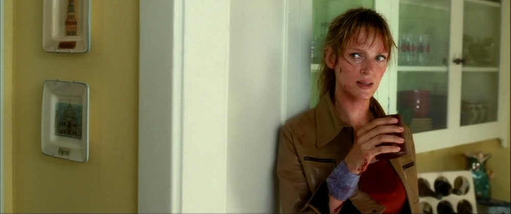

— Copperhead: So I suppose it's a little late for an apology, huh?
— Bride: You suppose correctly.
— Copperhead: Look, bitch... I need to know if you're going to start any more shit around my baby girl.
— Bride: You can relax for now. I'm not going to murder you in front of your child, okay?
— Copperhead: That's being more rational than Bill led me to believe you were capable of.
— Bride: It's mercy, compassion, and forgiveness I lack. Not rationality.
— Copperhead: Look. I know I fucked you over. I fucked you over bad. I wish to God I hadn't, but I did. You have every right to want to get even.
— Bride: No, no, no, no, no. No, to get even, even-Steven... I would have to kill you... go up to Nikki's room, kill her... then wait for your husband, the good Dr. Bell, to come home and kill him. That would be even, Vernita. That'd be about square.
